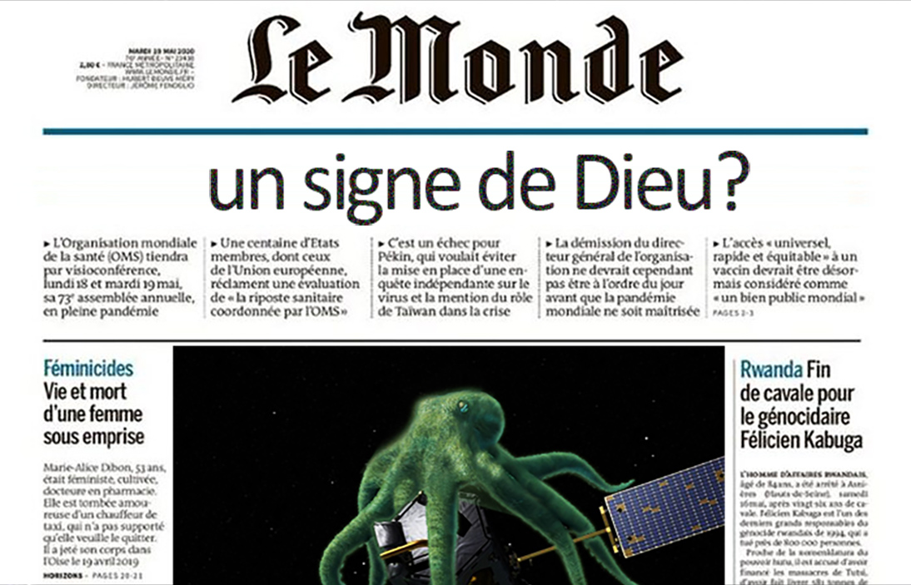
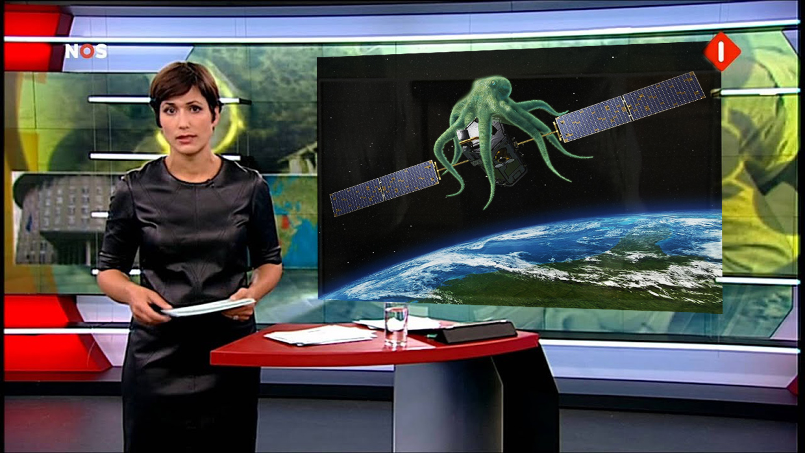
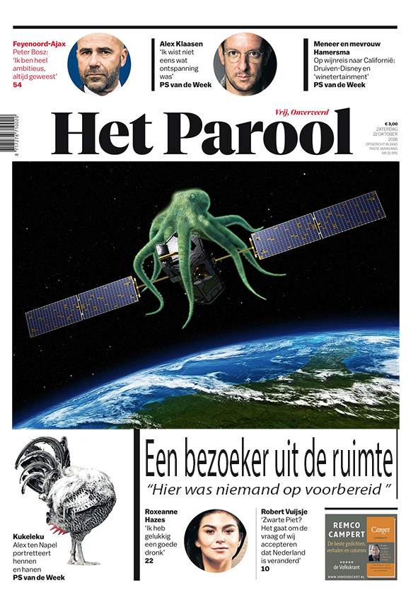
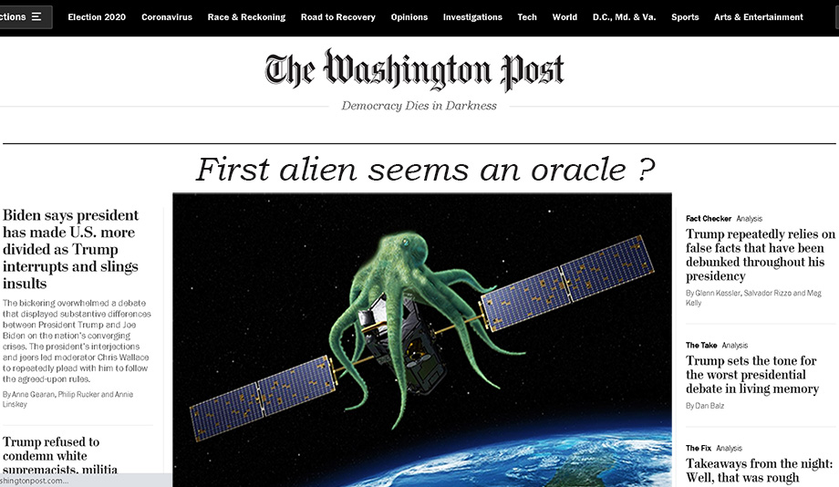
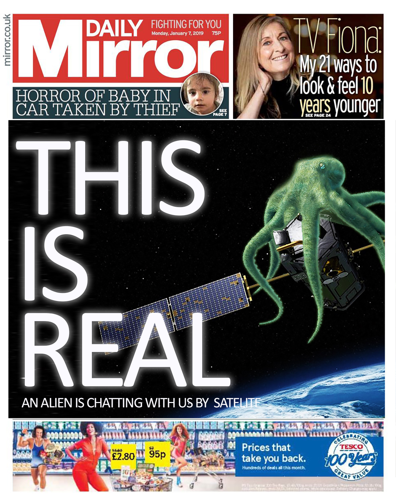

CNN staat in nauw contact met NASA en geeft elke dag live-uitzending

Boodschappen in elke taal worden door Louie feilloos van antwoord voorzien

De NOS heeft doet elk uur live-verslag

Complot-denkers weigeren een bericht te plaatsen

In de U.S.A. is men een campagne gestart "Louie 4 president"
